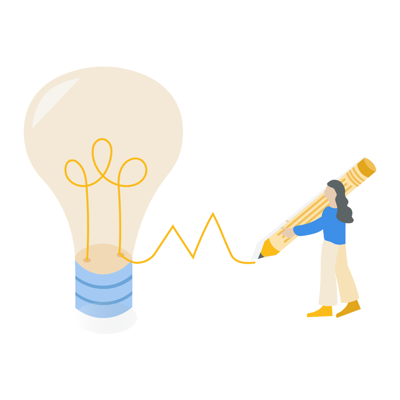
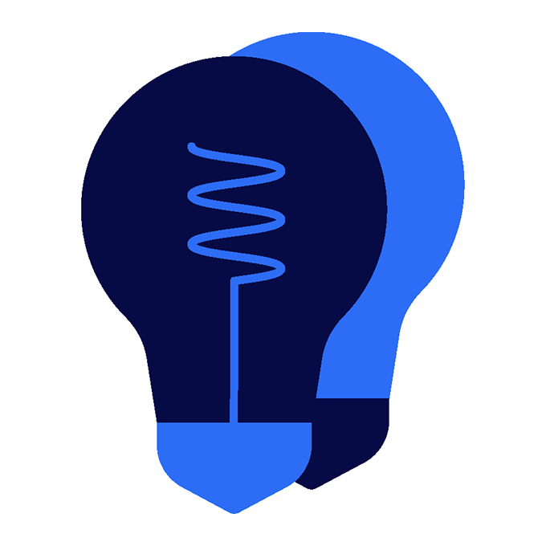
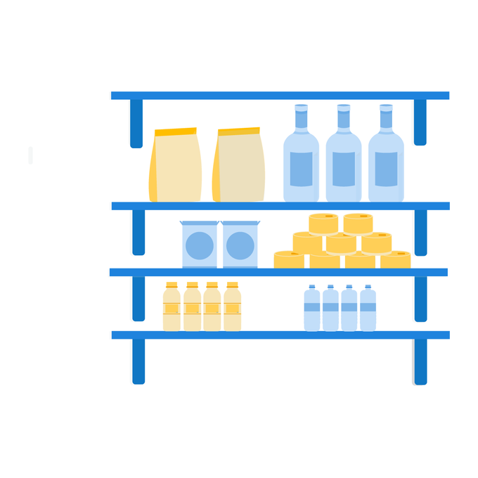
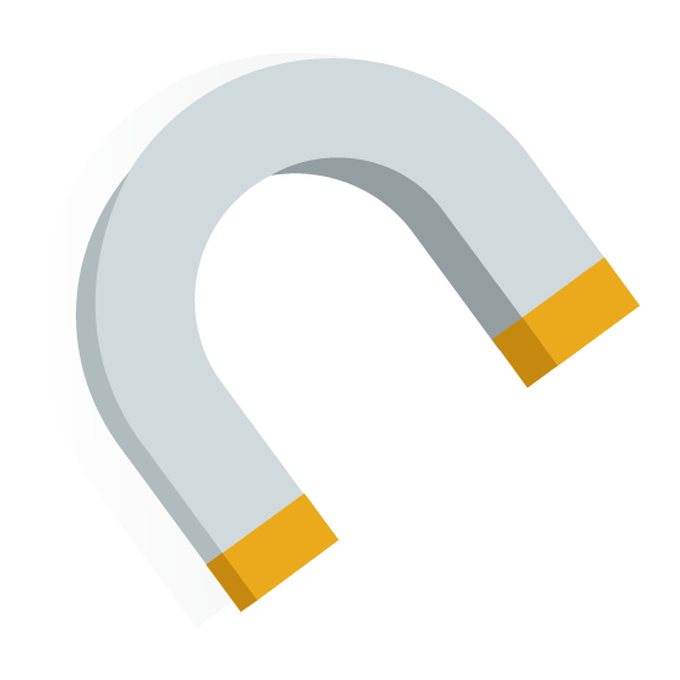
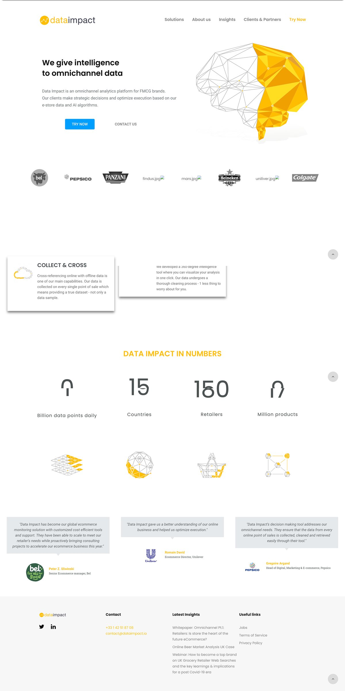
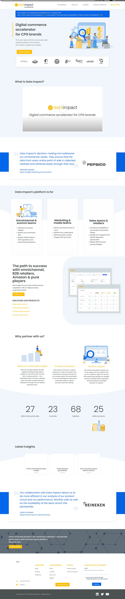
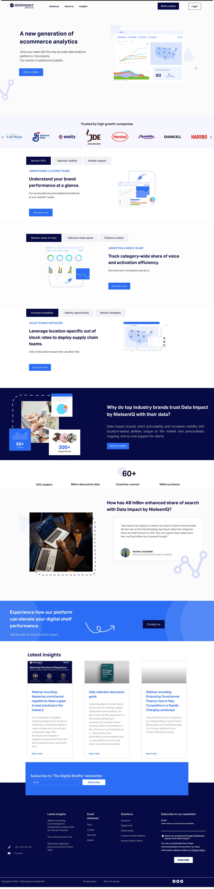
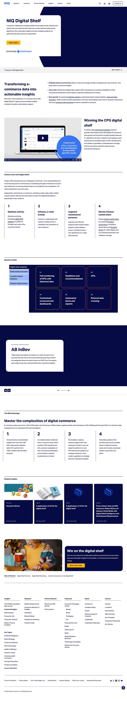

Marque & web · 2020–2025
De Data Impact à NIQ
Entre 2020 et 2025, j'ai mené la marque Data Impact à travers trois phases : une startup indépendante, une co-marque après son rachat par NielsenIQ, puis son intégration dans le rebranding mondial de NIQ.
- Client
- Data Impact / NIQ
- Années
- 2020–2025
- Rôle
- Brand & web designer
- Périmètre
- Marque, web, icônes, modèles




Vue d'ensemble
De 2020 à 2025, j'ai accompagné la marque Data Impact à chaque étape de sa transition. Une grande partie du travail consistait à gérer les parties prenantes et à faire en sorte que l'esprit de la marque d'origine survive à chaque changement.
01
Data Impact indépendante · 2020–2021
Phase 1
À mon arrivée, la marque était d'un jaune et d'un gris assez froids, avec des mises en page minimalistes et utilitaires et des illustrations abstraites de « points de données ». Cela collait à une entreprise très tech, mais il manquait selon moi la chaleur dont les clients avaient besoin pour créer un lien avec la marque.
Après une analyse de la concurrence, j'ai progressivement apporté une direction plus humaine : des personnages illustrés, fixes et animés, auxquels on pouvait s'identifier, et des bleus profonds qui adoucissaient la marque tout en la rendant plus crédible. Nous avons gardé la clarté qui avait fait la réputation de Data Impact.


02
Rachat & co-branding · 2021–2023
Phase 2
NielsenIQ a racheté Data Impact en octobre 2021. Notre logo est devenu une association avec celui de NielsenIQ, et nous avons dû adopter une présentation plus corporate, tout en nous battant pour garder la personnalité, le ton et l'énergie qui nous avaient toujours définis.
J'ai piloté le déploiement de cette identité hybride en interne, en m'assurant que les équipes, en contact client ou non, avaient les outils nécessaires. Il a fallu beaucoup de compromis pour garder notre voix de startup dans un ton plus corporate.

03
Rebranding NIQ & intégration complète · 2023–2025
Phase 3
En 2023, NIQ a lancé son rebranding mondial et, ironiquement, il reprenait la direction que nous suivions déjà : NIQ a abandonné son noir et vert pour des bleus profonds et des blancs nets. La transition suivante a donc été bien plus simple que prévu.
En 2024, nous étions devenus NIQ for Digital Commerce. J'ai piloté les modèles qui définissaient comment notre nouvelle identité devait apparaître partout, du site NIQ et de la documentation produit aux présentations et aux campagnes, et notre site indépendant a rejoint celui de NIQ.

04
Des icônes qui durent
Le système d'icônes
Une grande partie du rafraîchissement de 2021 reposait sur un système d'icônes que j'ai créé alors que j'étais designer en alternance, dans un univers tech complexe. Avec peu de références, j'ai misé sur l'abstraction, en transformant des notions e-commerce comme l'assortiment, la disponibilité et la visibilité produit en métaphores visuelles simples plutôt qu'en images littérales.
La bibliothèque d'icônes de NIQ s'est beaucoup enrichie depuis, mais beaucoup de ces formes et idées d'origine ont intégré le système. Les paires en haut de cette page en montrent quelques-unes.
Défis
Continuité : le premier rafraîchissement a été volontairement progressif pour ne pas perdre nos clients historiques. La fiabilité et la familiarité n'étaient pas négociables.
Préserver l'âme de la marque : les fondateurs tenaient absolument à ce que le ton, la jeunesse et le dynamisme de Data Impact ne se perdent pas, et j'étais d'accord. De la typographie au ton de nos modèles, l'équipe brand et moi avons continué à le défendre.
Résultat
Plus qu'un simple changement de nom, cela a été une intégration visuelle et culturelle sur cinq ans. NIQ for Digital Commerce fait désormais partie d'une marque mondiale, mais garde beaucoup de la fraîcheur et de la personnalité des débuts de Data Impact, parce que nous nous sommes battus pour les préserver.